We'll tailor your reading to exactly where you stand.
23people are on this page right now
The Analyzer
Does He Like You? Find Out What His Actions Really Mean
Six questions. Sixty seconds. Find out if his actions are showing real interest or mixed signals.
Interest
Communication
Investment
Analyze his behavior, communication patterns, and level of interest for personalized insights.
23people are on this page right now
★★★★★
The Analyzer
Does He Like You? Find Out What His Actions Really Mean
Six questions. Sixty seconds. Find out if his actions are showing real interest or mixed signals.
Interest
Communication
His Effort
Analyze his behavior, communication patterns, and level of interest for personalized insights.
23people are on this page right now
★★★★★
Question 1 of 6
Your Personalized Reading
Analyzing your answers…
✓
Interest
✓
Communication
✓
Investment
Comparing your answers with 10,000+ relationship patterns…
Almost There
Your reading is ready.
Enter your name so your results speak directly to you, Interest, Communication, His Effort, and your biggest relationship blind spot.
First name only — no email, no sign-up
Your scores are ready
Enter your name to continue.
Takes 2 seconds. We'll never ask for your email.
Your Reading
Here's what the pattern shows.
This is only the surface. What's really driving his behavior and what to do next is on the next page.
Biggest Strength
Biggest Warning
🔒Tap to see what this actually means
The Rest Of Your Reading
Here's What You Missed
These women were just like you.
The men they wanted were giving them mixed signals and pulling away.
Then they discovered the book.
Now, those same men are chasing them, putting in more effort, and becoming obsessed with them.
What Women Are Saying ❤️
★★★★★
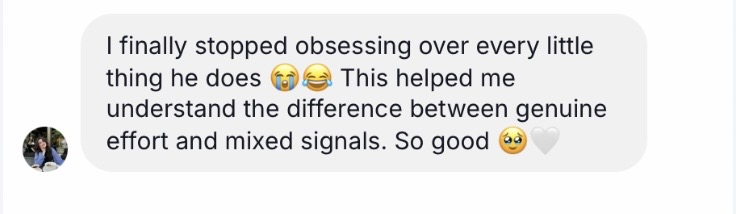
Sophie, UK 🇬🇧
✓ Verified Reader
★★★★★
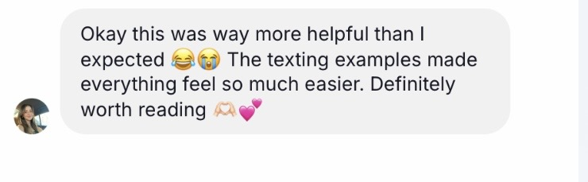
Lily, France 🇫🇷
✓ Verified Reader
★★★★★
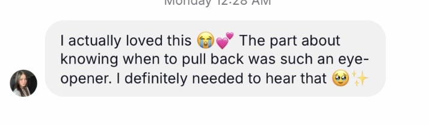
Amelia, UK 🇬🇧
✓ Verified Reader
★★★★★
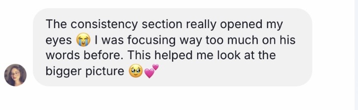
Olivia, France 🇫🇷
✓ Verified Reader
★★★★★
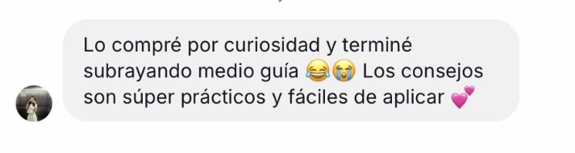
Clara, Spain 🇪🇸
✓ Verified Reader
★★★★★
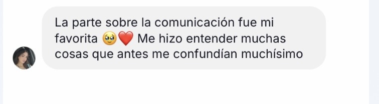
Valeria, Spain 🇪🇸
✓ Verified Reader
★★★★★
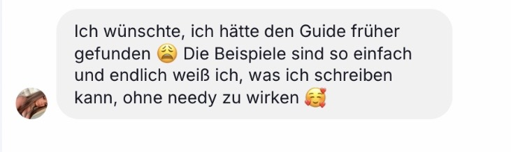
Anna, Germany 🇩🇪
✓ Verified Reader
★★★★★
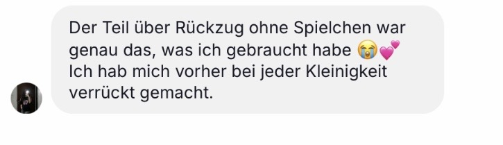
Sophie, Germany 🇩🇪
✓ Verified Reader
★★★★★
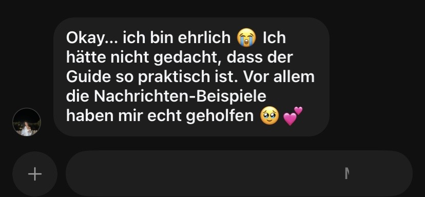
Lena, Germany 🇩🇪
✓ Verified Reader
★★★★★
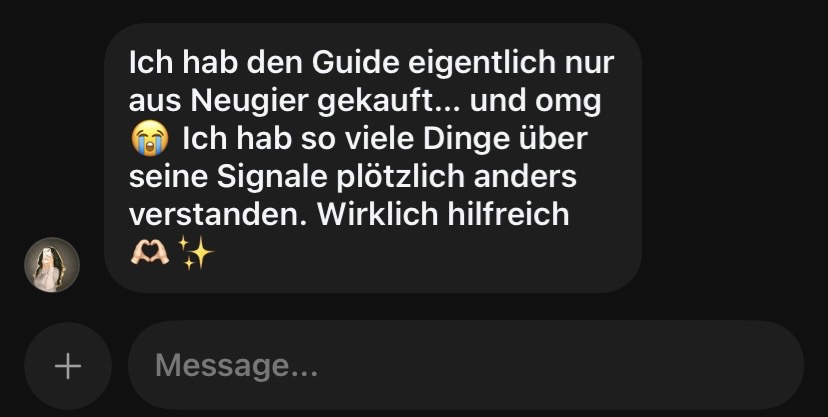
Mia, Germany 🇩🇪
✓ Verified Reader
★★★★★
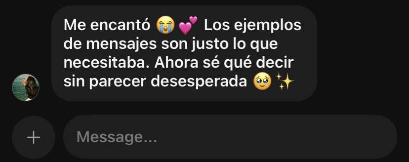
Sofía, Spain 🇪🇸
✓ Verified Reader
★★★★★
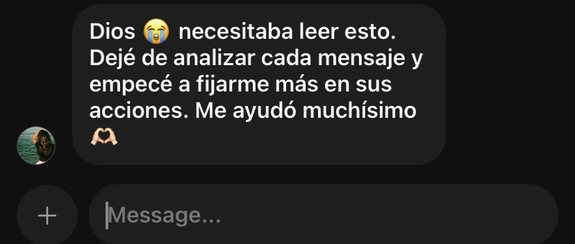
Carmen, Spain 🇪🇸
✓ Verified Reader
★★★★★
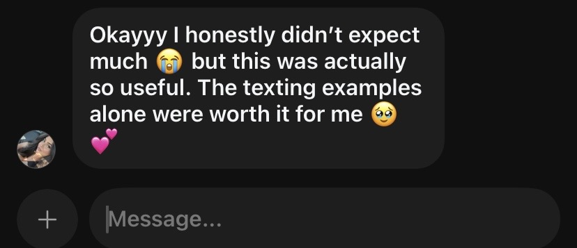
Emily, UK 🇬🇧
✓ Verified Reader
★★★★★
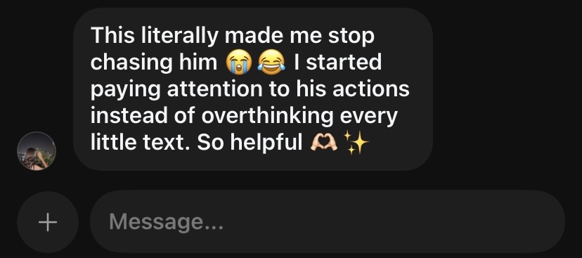
Chloe, UK 🇬🇧
✓ Verified Reader
★★★★★
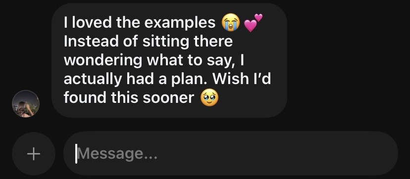
Jessica, USA 🇺🇸
✓ Verified Reader
★★★★★
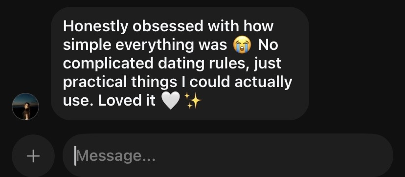
Grace, USA 🇺🇸
✓ Verified Reader
★★★★★
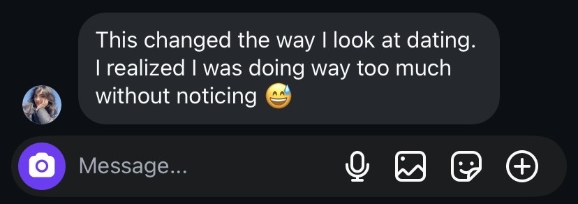
Emily, 29
✓ Verified Reader
★★★★★
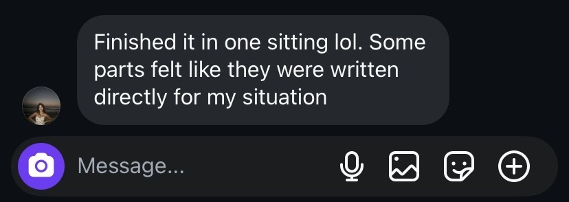
Olivia, 19
✓ Verified Reader
★★★★★
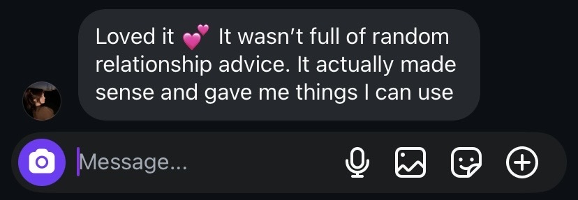
Sophia, 27
✓ Verified Reader
★★★★★
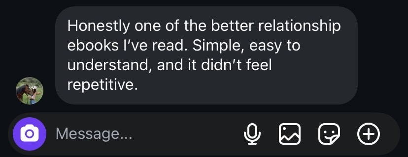
Madison, 32
✓ Verified Reader
★★★★★
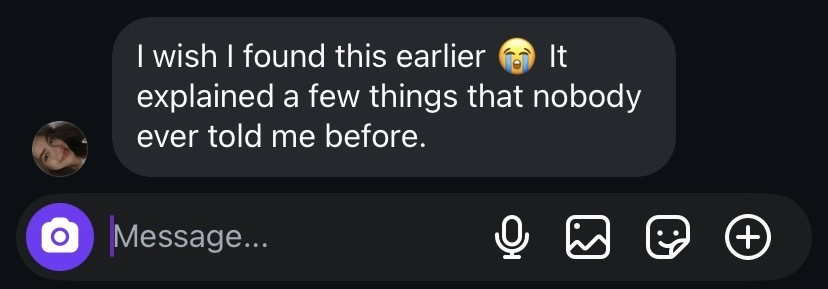
Chloe, 22
✓ Verified Reader
★★★★★
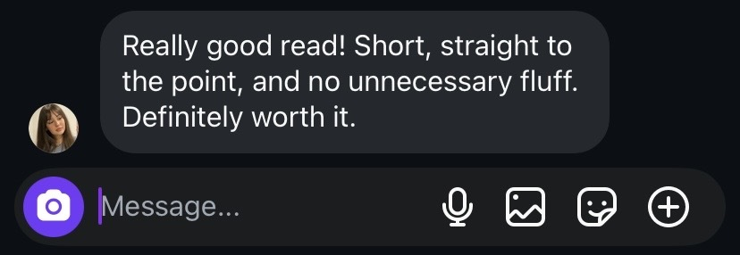
Hannah, 18
✓ Verified Reader
★★★★★
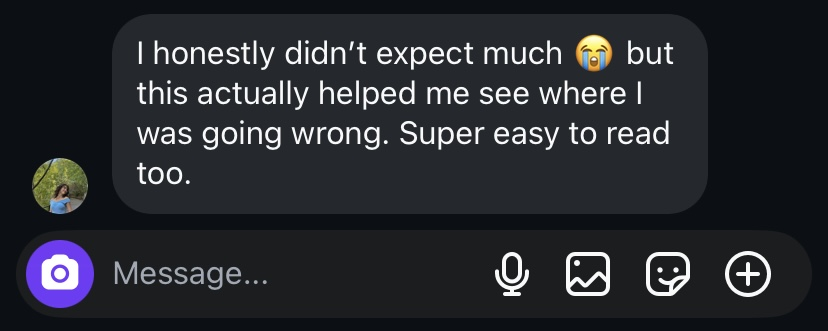
Ava, 25
✓ Verified Reader
★★★★★
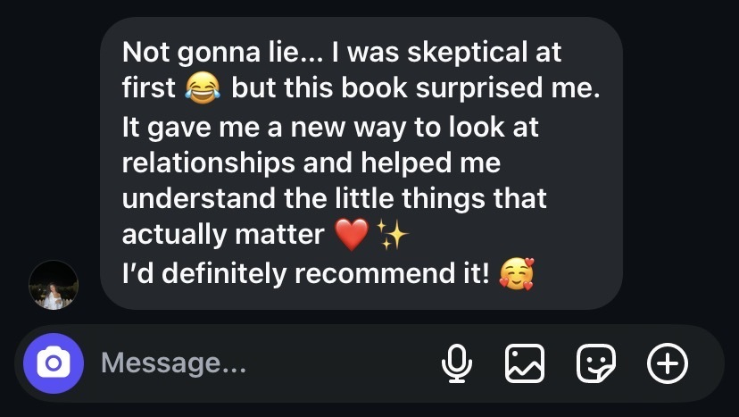
Grace, 24
✓ Verified Reader
Your results were unique to your answers, this isn't generic advice.
Your Biggest Warning
🎁
A Discount Is Waiting For You
Spin the wheel for a chance to win up to 100% off the book.
🎉 Your Discount Is Ready
Code:
100% Digital eBook · Compatible with iOS, Android, Kindle & PDF Readers
Make Him Obsessed
Stop Chasing. Start Being Chosen.
You don't need another dating tip.
You need to understand why he pulls away… why he loses interest… and why some women stay on a man's mind long after they've left the room.
This guide isn't based on manipulation, games, or fake texting tricks.
It's built around the psychology behind attraction, emotional attachment, and the behaviors that quietly make someone unforgettable.
Inside The Guide, You'll Discover
Why men become emotionally attached to certain women, and lose interest in others.
The subtle mistakes that push him away without you realizing it.
The attraction triggers that create genuine emotional investment.
How to stop overthinking every text and start understanding what's actually happening in his mind.
What makes a relationship grow stronger instead of fading after the honeymoon phase.
This Guide Is For You If
You're tired of wondering why he changed.
You keep attracting men who like you… but never fully commit.
You're done chasing mixed signals.
You want clarity instead of confusion.
You want to build attraction without pretending to be someone you're not.
Imagine This
Instead of checking your phone every five minutes…
Instead of replaying conversations in your head…
Instead of asking your friends what his last text "really meant"…
You finally understand the psychology behind his behavior, and know exactly how to respond with confidence.
That changes everything.
Why This Guide Is Different
Most dating advice tells you to: "Wait longer." "Play hard to get." "Just be yourself."
This guide explains why those things sometimes work… and why they often don't.
You'll understand the psychological principles underneath attraction, so you can stop guessing.
Instant Digital Access
Read on any phone, tablet, or computer.
Finish it in one evening.
Apply it immediately to your current or future relationship.
Limited-Time Offer
Your Reading Bonus
$23$8.99
Reserved exclusively for your results
Instant digital access, start reading in minutes.
Male psychologyAttraction triggersTexting mistakesEmotional connectionLong-term attraction
Frequently Asked Questions
No. It's about understanding attraction, confidence, and healthy communication, not controlling or tricking anyone.
It depends on why he lost interest. The guide can't guarantee results, but it can help you avoid common mistakes and improve how you approach the situation.
It's a 17-page guide that's short, practical, and designed to be read in about 20-30 minutes.
Not ready yet?
Get our free dating guide. Enter your name to receive it.
Enter your name to continue.
Free Guides
7 Free Dating Cheat Sheets
Practical, no-nonsense guides on texting, attraction, emotional connection & self-respect. Tap any guide below to start reading.
015 "Innocent" Texts That Keep Him Thinking About You All Day
02The "Pull-Back" Protocol: What to Say When He Gets Distant
033 Conversation Starters That Build Emotional Connection
047 Hidden Signs He's Genuinely Falling for You + 3 Red Flags
05The Attraction Blueprint: 3 Psychological Triggers That Spark Interest
06Why He Ghosted: 4 Mistakes Women Sometimes Make Early in Dating
07The High-Value Woman Checklist: 10 Traits That Naturally Command Respect
Free to read, no email required.
Free Guide 01 / 07
5 "Innocent" Texts That Keep Him Thinking About You
You don't need to send a flirty paragraph to stay on his mind. Sometimes, the simplest messages create the strongest curiosity, because they give him something to wonder about without demanding his attention.
1. "Something just reminded me of you 💭"
It naturally makes him wonder: "What reminded you of me?" The key is to keep your explanation genuine, you're creating a conversation, not playing a game.
2. "I just remembered what you said the other day…"
This shows that you actually listened. When someone realizes you remember the little things they say, it can create a stronger sense of connection.
3. "You would actually love this 😄"
Send this when you come across something that genuinely matches his personality or interests, a restaurant, video, song, or inside joke.
4. "Okay, I have a question for you…"
Then ask something fun and specific, such as: "Would you rather spend a week in the mountains or on a tropical island?"
5. "I have a funny story to tell you later 😄"
This creates a little anticipation. But there's one rule: actually have a story to tell. Don't manufacture mystery just to keep someone interested.
The Real Secret
The goal isn't to make him obsess over you. The goal is to create conversations that feel easy, memorable, and enjoyable for both of you. The right connection doesn't require constant texting, mind games, or pretending to be unavailable.
Want Him to Think About You Beyond the Text?
These five messages can help you create more natural, memorable conversations, but the right words are only one piece of the attraction puzzle. If you want to understand what makes a man become emotionally invested, think about you more often, and genuinely want to move closer to you, there's a bigger strategy behind it.
Free Guide 02 / 07
The "Pull-Back" Protocol: What to Say When He Gets Distant
Step 1: Match the Reality, Not Your Anxiety
If his communication has slowed down, don't immediately assume he has lost interest. He could be busy, stressed, distracted, or dealing with something unrelated to you.
Step 2: Send One Calm Message
Try: "Hey, you seem a little quiet lately. Everything okay?" No accusations. No emotional paragraphs. You're giving him an opportunity to communicate.
Step 3: Stop Carrying the Conversation Alone
If you've already reached out and he continues giving minimal effort, stop trying to manufacture connection by yourself. Let his actions give you information.
Step 4: Watch for Consistency
Ask yourself: Does he initiate? Does he follow through? Does he make time? Does his behavior match his words?
Your Reminder
You don't have to chase someone into choosing you. Healthy attraction should leave room for mutual effort, curiosity, and consistency.
Stop Chasing. Start Understanding Attraction.
Knowing what to say when he pulls away is useful. But imagine knowing how to build the kind of connection where you don't constantly have to wonder whether he's losing interest in the first place. How to Make Him Obsessed With You goes deeper into the psychology of attraction, emotional connection, and the behaviors that make a woman unforgettable.
Free Guide 03 / 07
3 Conversation Starters That Build Emotional Connection
1. "What's something you could talk about for hours?"
This reveals what genuinely excites him and gives you a much better conversation than another round of small talk.
2. "What's one experience that changed the way you see life?"
This moves the conversation beyond facts and into personal experiences, values, and perspective.
3. "What's something you've always wanted to do but haven't done yet?"
Now you're talking about dreams, curiosity, and future experiences. If you discover a shared interest, even better.
The Connection Formula
Great conversations usually have three ingredients: Curiosity + Vulnerability + Reciprocity. Ask a question, listen, share something about yourself, and let the conversation naturally develop.
Great Conversation Is Just the Beginning…
Knowing what to ask can open the door to connection. But how do you become the woman he looks forward to talking to, thinks about when you're not around, and naturally wants to know more about? That's where the deeper psychology of attraction comes in.
Free Guide 04 / 07
7 Hidden Signs He's Genuinely Falling for You
He Remembers the Little Things: you mentioned your favorite coffee once; later, he remembers it.
He Makes Consistent Effort: he checks in, follows through, and doesn't leave you wondering.
He Wants to Know the Real You: he asks about your goals, opinions, and what matters to you.
He Starts Including You in His Future: comments like "We should try that place" or "Next month, we could…"
He Introduces You to His World: friends, favorite places, hobbies, and routines.
He Shows Up When It Matters: he makes an effort when you're having a hard day.
You Don't Have to Constantly Decode Him: there's growing clarity and mutual effort.
3 Red Flags You Should Never Ignore
• Only consistent when he wants something.
• Words and actions don't match.
• You constantly feel anxious around him.
The Bottom Line
Don't measure a man's feelings by how intensely he makes you feel. Measure them by consistency, effort, respect, and behavior over time.
Don't Just Look for Signs. Become the Woman He Can't Ignore.
Knowing whether he's falling for you is useful. But wouldn't it be better to understand how attraction and emotional investment actually develop in the first place? Stop decoding every little sign. Start understanding the bigger picture.
Free Guide 05 / 07
The Attraction Blueprint: 3 Psychological Triggers
Trigger #1: Curiosity
People naturally pay attention to things that leave a small unanswered question. Example: "I found a place today that you would probably love." Curiosity creates an invitation to continue the conversation, without manipulation.
Trigger #2: Emotional Association
People tend to remember experiences connected to emotion. Inside jokes, funny stories, and spontaneous experiences can make interactions more memorable.
Trigger #3: Feeling Seen
One powerful form of connection is feeling genuinely noticed. Instead of a generic compliment, try: "I really like how passionate you get when you talk about something you care about."
The Attraction Equation
Think less about "How do I make him want me?" and more about "How do we create an experience where we genuinely enjoy being around each other?"
You've Seen the Psychology. Now Go Deeper.
Curiosity. Emotional association. Feeling seen. These are only a few pieces of the attraction puzzle. How to Make Him Obsessed With You takes the psychology further, through communication, emotional connection, feminine confidence, and intentional behavior.
Free Guide 06 / 07
Why He Ghosted: 4 Mistakes Women Sometimes Make
First, Remember This
Someone ghosting you is not automatically your fault. People disappear for many reasons, avoidance, immaturity, loss of interest, fear of confrontation, or lack of readiness.
Mistake #1: Giving more than the relationship has earned.
Mistake #2: Ignoring inconsistency because of chemistry.
Mistake #3: Trying to convince someone to be interested.
Mistake #4: Making his silence about your worth.
What to Do Instead
Give reasonable space. If appropriate, send one clear check-in. Don't repeatedly chase an unanswered message. Pay attention to what happens next, and let his behavior provide the information you need.
Remember
Rejection is information, not a verdict on your worth. The goal is to recognize the people capable of showing up, communicating, and choosing you consistently.
What If You Could Recognize the Pattern Before He Disappears?
Ghosting often leaves you asking "What did I do wrong?" But the better question is what you should understand about attraction, communication, and emotional investment before you get there. How to Make Him Obsessed With You goes beyond what to text.
Free Guide 07 / 07
The High-Value Woman Checklist
10 traits that naturally command respect:
1. She Knows Her Standards: they're boundaries for who gets access to her life.
2. She Doesn't Beg for Basic Effort: she observes behavior and makes decisions accordingly.
3. She Has a Life Outside Dating: friendships, interests, goals, and ambitions.
4. She Communicates Directly: she doesn't expect someone to read her mind.
5. She Can Walk Away From What Doesn't Serve Her: staying somewhere unhealthy can cost far more.
6. She Doesn't Compete for Attention: the right relationship isn't a competition.
7. She Takes Accountability: "I handled that badly. I'm sorry. I'll do better."
8. She Doesn't Confuse Anxiety With Chemistry: butterflies aren't always a sign of love.
9. She Chooses Reciprocity: she looks for effort that flows both ways.
10. She Doesn't Abandon Herself to Keep Someone: the right relationship should complement who you are.
Your New Rule
Don't ask "How do I make him value me?" Ask: "Does this relationship reflect the value I already know I have?"
A Final Reminder
Dating isn't about mastering the perfect text or learning how to manipulate someone into chasing you. It's about being intentional: communicating clearly, recognizing healthy effort, protecting your standards, and choosing relationships where interest is mutual.
Being High-Value Is Only the Foundation.
Self-respect, standards, and confidence matter, but knowing your worth is only the beginning. The next step is understanding how to communicate your value, create genuine emotional connection, and become deeply memorable to the man you're dating.
![Make Him Obsessed]()